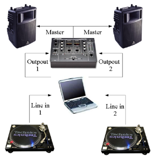

Digital-Scratch
Control digital tracks playback with vinyl turntables on GNU/Linux.
DJ mix setup
You have to play a "timecoded" vinyl disc such as the Serato Scratch Live record. Then, instead of connecting your turntable to your mixer, connect it to the line input of a sound card. And finally, connect the sound card output to the mixer.
Load a tune on left or right deck of Digital-Scratch player and start your turntable. When you are changing speed and direction on the turntable, the digital track is played accordingly.
Since Digital Scratch supports JACK as sound card "driver", you have to run Digital Scratch on a properly configured JACK environment. For a 2 turntables DJ set you need 2 available virtual stereo inputs and outputs in JACK.

Software components
The core motion detection is done by an SDK built as a shared library (libdigitalscratch). It can be integrated with various kind of controllable software player.
Digital-Scratch also provides a player (digitalscratch) which uses the library. This player is able to play one or two tracks. The playback parameters (speed and direction) could be changed in real time. It also provides a simplistic file explorer used to select tracks to play.